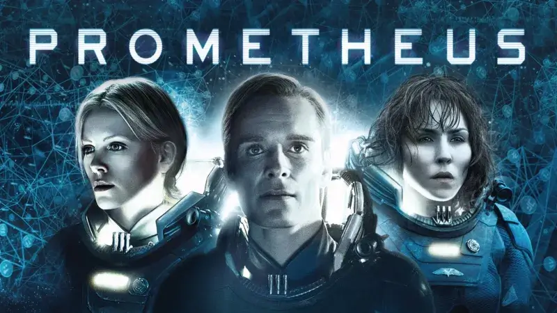

Assista ao trailer de:
Alien, o Oitavo Passageiro (1979)
Principais Filmes
-
Alien (1979)
Uma tripulação investiga um pedido de socorro num planeta remoto e faz uma descoberta assustadora.
-
Aliens
Ripley desperta é enviada, com fuzileiros navais, a uma colônia para combater alienígenas.
-

Alien 3
Ripley é perseguida por um alienígena depois que sua cápsula cai em um planeta-prisão.
-
Alien a Ressurreição
Ripley é clonada como um híbrido de humano e alienígena, e volta a combater alienígenas.
-

Prometheus
Uma equipe de cientistas e exploradores viaja em busca das origens do ser humano.
-
Alien Covenant
A tripulação da Covenant descobre uma ameaça e tenta uma angustiante fuga.
-
Alien Romulus
Jovens colonizadores espaciais encaram o terror supremo.
Ciclo de vida de um Xenomorfo
Ovo (Eggmorph)
Parecidos com botões de flores, os ovos são grandes, de aparência gosmenta, com uma camada externa que parece couro, e no seu topo, uma abertura em X, sendo que as "pétalas" no topo se abrem, dando liberdade ao abraçador.
Abraçador (Facehugger)
Segundo estágio do alien. Após sair do ovo, a aparência do alien é de uma criatura aracnídea, pálida e com uma cauda. Esse abraçador contém em seu corpo um embrião xenomorfo, e eles liberam o embrião em qualquer ser orgânico multicelular existente no ambiente (cachorros, predadores, humanos, crocodilos, grandes crustáceos, etc). Para fazer isso, agarram o rosto da vítima com suas "patas" e enrolam sua cauda em volta do pescoço da vítima, induzindo-as ao coma. O embrião é depositado dentro do hospedeiro por uma probóscide que entra pela boca. Os abraçadores podem variar entre normais e abraçadores-rainhas. Estes últimos liberam dois embriões, sendo um normal e o outro também rainha. Depois disso os embriões ficam no corpo do hospedeiro por um certo tempo.
Estoura-peito (Chestburster)
Depois de sair do hospedeiro, mostra-se de estatura pequena, também conhecido como estoura-peito, devido ao fato de estourar o tórax de seu hospedeiro ao nascer. Uma vez pequeno se alimenta de tudo que vê pela frente, pois não tem sistema digestivo, por conta do ácido em seu corpo. Transforma o alimento comido em energia, assim cresce e vira um adulto.
Xenomorfo (Xenomorph)
Esta é o quarto e último estágio evolutivo do alien, sendo a fase adulta do estoura-peito. O estoura-peito é uma das fases mais vulneráveis dos xenomorfos, porém essas criaturas foram criadas para que se tornassem adultas em menos de 24 horas, assim a colmeia se desenvolve mais rapidamente. Esta é sem dúvida a mais perigosa fase de sua evolução.
Onde assistir